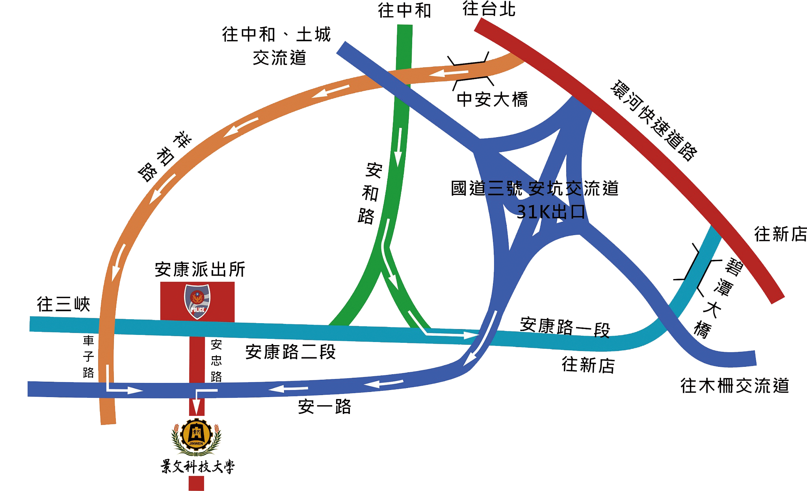

交通路網

捷運
●新店線
大坪林站 4 號出口，轉乘新店客運 綠10，便可抵達本校。
●中和線
景安站(景安路140號)，轉乘新店客運 景文專車，便可抵達本校。
公車
●新店客運
凡經安康路之新店客運皆可搭乘，綠7、綠8、綠15、643、648、906、909等各線在安康派出所站下車。
●台北客運
624、綠1、棕7至安康派出所站下車。
●指南客運
202區間線、248、橘1、905至安康派出所站下車。
※安康派出所站下車後，請至安康高爾夫球場搭乘本校接駁車至本校校門口。